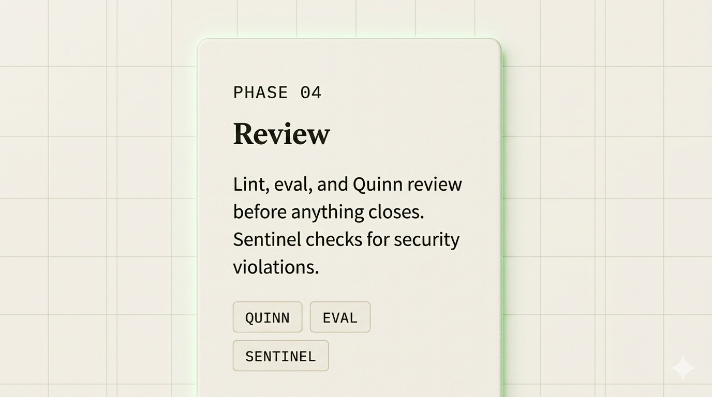
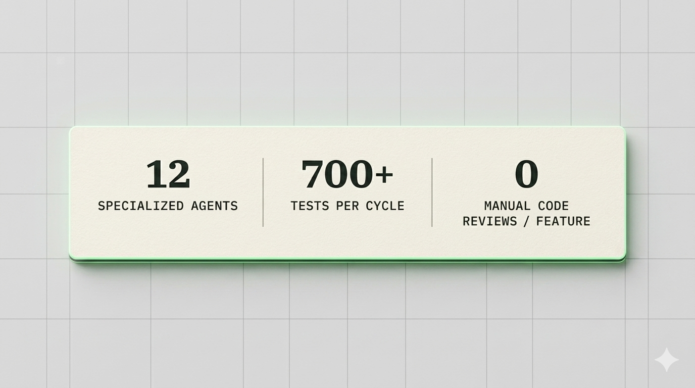

Autonomous Development OS
An autonomous development OS — twelve specialized agents that plan, build, test, and ship code. The human sets direction and approves at gates. Everything else runs.
Every session starts the same way.
How it works
Every feature follows the same five-phase sequence. Gates are mechanical, not social — a phase doesn't close until the criteria pass. No exceptions.
Architect and Bea scope the work. Acceptance criteria are written before a line of code exists.
Bob writes code to pass the tests. Nothing more. Tessa's tests defined the target; Bob hits it.
700-test suite runs. The gate stays red until every test passes. No workarounds, no waivers.
Lint, eval, and Quinn review before anything closes. Sentinel checks for security violations.
Stewart closes the ticket and commits the work. Oscar queues what's next in the backlog.
Nothing moves to the next phase until the gate passes. Nothing reaches done without clearing all five.
The roster
Each agent has a bounded role, a skill set, and a defined authority ceiling. They collaborate under governance — they don't run loose.
Writes the code. Takes a ticket from in_progress to submission.
Writes tests before the code. Enforces RED → GREEN → REFACTOR.
Cleans up after the feature lands. Doesn't add scope.
Owns the backlog. Sequences, monitors SLOs, runs the daily sweep.
Code review gate. Catches what tests miss.
Diagnoses and fixes failures. The crash expert.
Designs before anyone codes. ADRs, tradeoffs, file-level specs.
Translates goals into tickets with machine-verifiable acceptance criteria.
Backlog integrity and cross-ticket dependency management.
Queues work, routes agents, manages concurrency.
Judges output quality against criteria. The automated reviewer.
Reviews for vulnerabilities, dependency risk, and governance violations.

Forge — interwoven agent architectureBuilt by Forge
Three products in active development — each built and iterated on through the same pipeline described above. Every ticket, test, and commit goes through Forge.
An autonomous job search system. Eight agents, three-layer deduplication, fully local inference.
strata-work.com ↗ In definition Life with PatinaPurchase intelligence and household management. Two consumer products designed and scoped through the same pipeline.
lifewithpatina.com ↗ Infrastructure GenArchThe intelligence layer — Alexandria, SLF, and Forge. The shared infrastructure across all Lexenne products.
genarch.dev ↗
forge.v2 — activeDesign decisions
The system was designed to hold its shape as it grows. These four constraints aren't incidental — they're what separates a development OS from a smarter task runner.
Constraint 01
Backlog as state machine
Not a task list. Tickets have states, transitions, guards, and owners. Ghost tickets and stale claims are structurally impossible — the schema enforces what process cannot.
Constraint 02
TDD, enforced mechanically
Tests are written before code. RED → GREEN → REFACTOR is the sequence. No exceptions, because the gate won't open on a red suite regardless of who's asking.
Constraint 03
Memory survives context limits
Session scratchpads, decision traces, and phase handoffs persist across context boundaries. Agents don't start cold — they pick up where the last one left off.
Constraint 04
Bounded authority, always
Every agent has a defined ceiling. No agent can approve its own work, claim outside its role, or skip review. Governance is baked into the routing layer, not the prompt.
The builder
Founder, Lexenne
I built autogenous-synthesis because I kept running into the same problem: enterprise software projects take too long, drift from their requirements, and lose institutional knowledge at every handoff. After 25 years in enterprise technology — and watching teams with access to good tools still ship slowly — I decided the constraint wasn't the tools. It was the workflow around them.
autogenous-synthesis is the result: a framework where specialized agents handle the repetitive mechanics of delivery — writing tests, reviewing code, updating documentation, sequencing the backlog — while humans stay in the loop at the decisions that actually matter. Every product in the Lexenne portfolio was built and is maintained by this system.
Get in touch
Contact us about how autogenous-synthesis could apply to your development workflow, or explore the GenArch infrastructure it runs on.